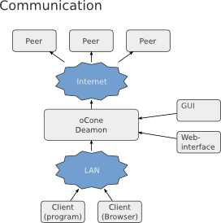

Table of Contents
To grab and transform content from webpages we need a turing complete language to transform (X)HTML, PDF, Text and other formats to semantic XML. As a bonus the language should have good, build in, capabilities to work with XML.
In theory the deamon could serve a lot of language bindings for this task, but the scripts need to be spread between the peers, so that we should concentrate on one tested language. Executing foreign scripts in your personal environment may result in security risks if the language is not known for good sandboxing of the scripts.
ECMAScripts (some may only know the JavaScript implementations) has proven good in all of the above points and there are a lot of open source language bindings for ECMAScript interpretors. The default language for transformation scripts will be ECMAScript.
When scripts are distributed through a peer to peer network a user has to trust the locally executed scripts beyond the sandbox. Users mistrust may be caused by political incorrect contents, or scripts abusing the power given by a peer to peer network.
To ensure that all users who request contents are also contributing to the network, users may only request data from scripts which they allow to be executed locally.
A user should be able to have fine grained control over the local scripts, so that he should have several options for each script: - Allow execution - Allow caching of aggregated contents - Allow forwarding of requests
Not every user wants to perform such fine grained control over possible scripts, so that there should be common lists of “good” scripts to help users configuring their deamon.
Caching of requested content is viable for the network to work. If contents would not be cached a grown network could cause DOS attacks on bad performing websites.
Each deamon has a configured amount of diskspace available for cached content. A script defines the cache strategies for content, which may be a combination of time to live and directives to handle the content if the website is not reachable any more. If the size of the cached content is bigger then the configured cache size old content will be purged.
On a request the deamon itself will check if he has the content available. If this is not the case the deamon will start a breadth-first search on all known peers with a limited depth. If the depth limit is reached and no cached content could be found the deamon will rerequest the content from the website and update its cache. It may notify the previously contacted peers that it has the requested content available now.
The deamon should be able to run as a background process with no user interaction to optimally perform on servers and can be up 24/7. Optionally it should be possible to configure the deamon using a webinterface or a normal GUI. To reach this goal we get three levels of communication:
Peer to peer communication
This communication level describes the interaction of different oCone peers for interchaning data, sending cache requests and sharing scripts. The protocol itself is described in the section `Peer to peer protocol`__.
GUI communication
The GUI needs access to the oCone deamons data to display the clients status and to configure the deamon.
Presumeably we do not need to describe another network protocol here but can interact using a local command line interface. The output of the CLI programs need of course be parseable (perhaps optionally XML) and offer access to all features of the deamon.
Deamon <-> client communication
The clients are not oCone deamon in this diagram, but random programs using the oCone network and caching abilities to request content.
Example for this use case:
A user wants to use his browser request wikipedia contents using the oCone network. He enters an URL like ocone://en.wikipedia/oCone in the address bar of his/her browser. The browser now contacts the local oCone deamon which checks its cache for the requested information and forwards the requests to other peers in the network if the data was not locally available. In the meantime the administrator of the oCone deamon could watch the status of the request using the GUI, or CLI tools. If the browser gets the resulting XML he could display it using a defined set of XSLT and CSS, or just print the raw XML.
The client protocol should be easy to implement for random clients. Nearly each programming language / development environment has abilities to send HTTP requests, so that we will use a REST(ful) interface for the client to deamon communication. To enable this the oCone deamon needs to start a HTTP server, but we of course do not want to use the common port 80, because we do not want to enforce the deamon to run as root. The default port the HTTP server will run on is port 8023 (yet unassigned), but this should of course be configurable.
The client should understand URLs of the ocone:// scheme, with some special meanings for the URL parts:
Server, plus optional port
Defines the host and port to connect to the oCone deamon.
Path
The path uniquely identifies the script as proposed in the scripts document.
Parameters
The parameters are a list of optional parameters given for the script defining what exactly should be fetched, etc.
The “server” specifies the hostname or IP the oCone deamon runs on, and the the “port” defaults to the above mentioned 8023, but can be overwritten. The “script” defines a unique script name referencing the script to fetch the data with optional additional parameters provided to the script.
The server simply returns a XML document, either containing a error, or the result of the script. The following RelaxNG defines the structure of the scripts result.
The content element defines a new default namespace for its childs which contain the actual content generated by the script.
Using IPv4, NAT is a quite usual setup for a lot of deamons. NAT without forwarding the right ports to the IP the deamon runs on, or firewall rules declining the access to the port, prevent the deamon to be contacted from the net. Ho do we deal with peers which can access other peers, but are not accessible from the web?
One solution could be to establish permanent connections with a decent amount of known peers and only communicate over those established connections. The addresses of those impaired peers should not be forwarded to other peers, because only the impaired peer itself can establish connections.
We need to share scripts through the peer to peer network with user notification to authorize new scripts, or new script versions. On the other hand we want to provide script white lists to make it easier for user to allow groups of well known scripts to be executed in his local environment. Those script lists could include the scripts, so that they should not need to be shared through the network, but are directly included.
oCone is designed to transform and transfer content described using XML and no binary content. Binary content can always be embedded in XML using PC-Data sections or data:// URLs. Embedding binary content will increase the required cache sizes and use far more bandwidth and could hardly be described using a markup language.
Conclusion: - We allow data URLs but ask the user to use them as seldom as possible. It
would be a major drawback and impossible to block reliably binary content with valid information in articles.
When setting up a new deamon for the oCone network the deamon need to know an initial set of running peers to be able to receive more peer addresses. We need set of working peer addresses to build up a complete network and integrate new clients. There shouldn’t be a single point of failure, and this way no single peer repository or single initial peer to connect.
The list should of course be customizeable to allow builing private oCone networks.
Since the protocol is documented and the (default) deamon will be open source it is easy to write your own deamon using the protocol and try abusing the network. This sections should list possible attacks and strategies to act against them.
As no deamon needs to authentificate there is no way to identify a deamon. Everything, like version string, signed messages, etc. could be faked by just copying those parts from the official deamon.
Injecting spam, or other broken content
A peer could pretend to have content cached and serve completely different content instead. This could either be spam, or just plain wrong content. This only affects cached contents, because othwerwise the peer will fetch the data itself.
This problem could be resolved by comparing the return of multiple peers by multiple hashs of the content and use the results with the most hits. This could of course also be manipulated, but should be nearly impossible in big networks, and can be combined with IP / Client blacklist distributed by common servers.
Without an authorized peer it is impossible to really verify a script response as correct.
Serving malicious scripts
Malicious scripts can be detected by storing several hash sums for the script in the whitelist and comparing the script against those hashes.
Exceeding peers memory with too many requests
Each peer has a queue with the requests by other peers he wants to serve. This queue could be exceeded and consume a lot of open connections and memory by high amounts of requests. If the queue of a peer exceeds a certain limit the peer could response with messages indicating that it is currectly unavailable for more requests.
To prevent from peers always sending service unavailable messages, the other peers could store ratings for their peers, and send requests to those peers more seldom and schedule their requests with a lower priority. This should also help balancing the requests in the network.
Only requesting, but no caching / fetching / forwarding
The default deamon will ensure, that the user can only request contents from scripts he offers caching, fetching and forwarding for. A custom deamon could of course bypass this.
The only way to detect such misbehaviour is gathering statistics for every known peer and reduce the peers schedule priority on bad behaviour. There is no way to proof detect some peers misbehaviour. In a big enough network the count of those misshapen peers should always be low enough to be safely ignored.
For most end users XML is not readable by default and needs to be transformed into a visually enhanced document description language like XHTML using CSS, or PDF. The oCone deamon itself will not deliver such formats, because its basic usage is to transform, cache and deliver semantic XML, so that the output transformation should be done in the clients. A useful language for this could be XSLT, because it could be interpreted by most browsers and has bindings for nearly each language.
The browsers of the Mozilla Foundation (Firefox, Mozilla) are XUL based and allow easy extension of their core functionality by XUL based browser plugins. It should be pretty easy to write an extension handling ocone:// URLs and use a set of predefined or fetched XSLTs to display them in the browser window.
Using the mozilla XUL runner we could create a OS independent standalone client reusing the above mentioned browser extension with full support for browsing oCone.
As an example for other language an implementation of a client in PHP should be very simple and would make the data fetched by oCone deamons reusable in web applications.